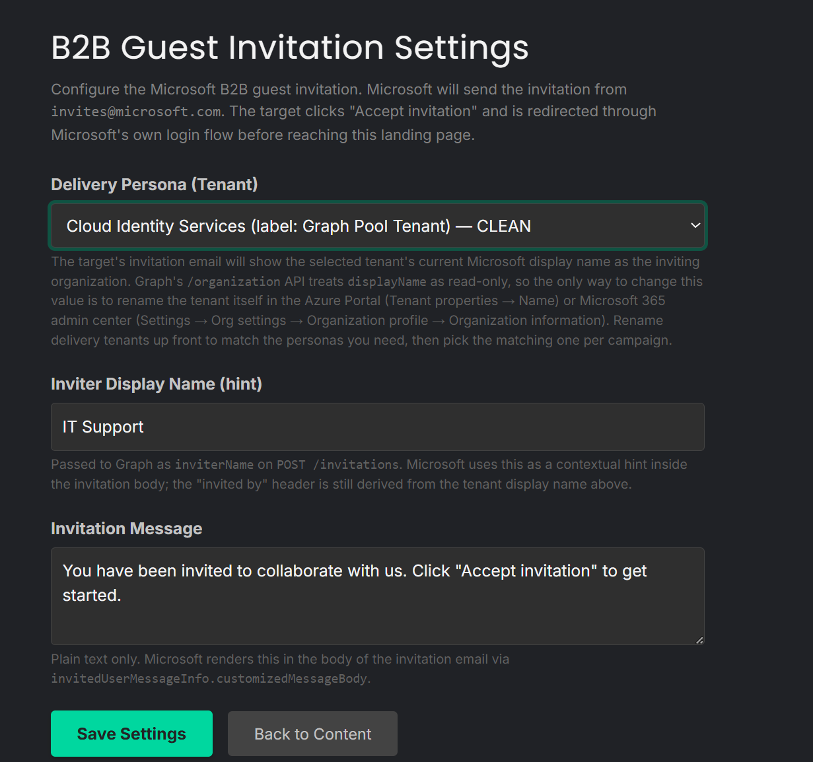
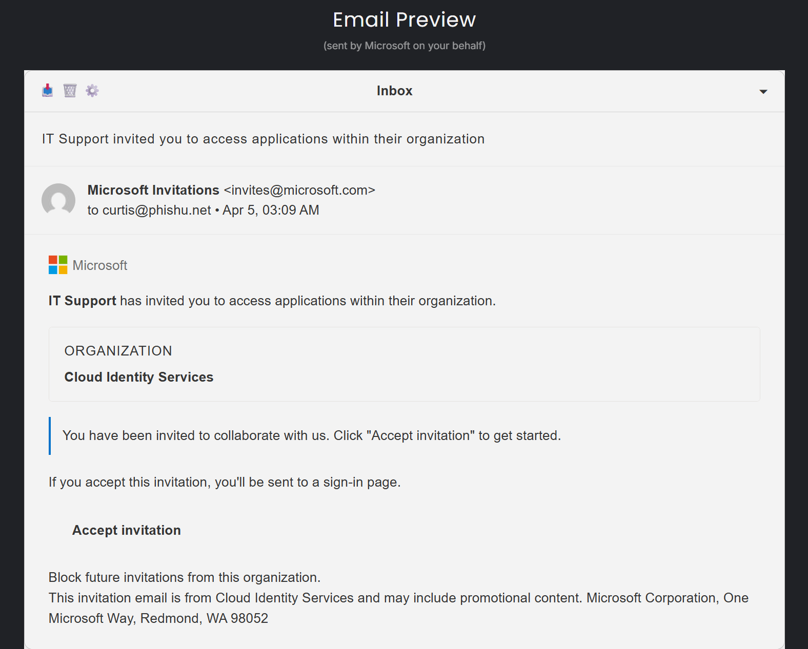
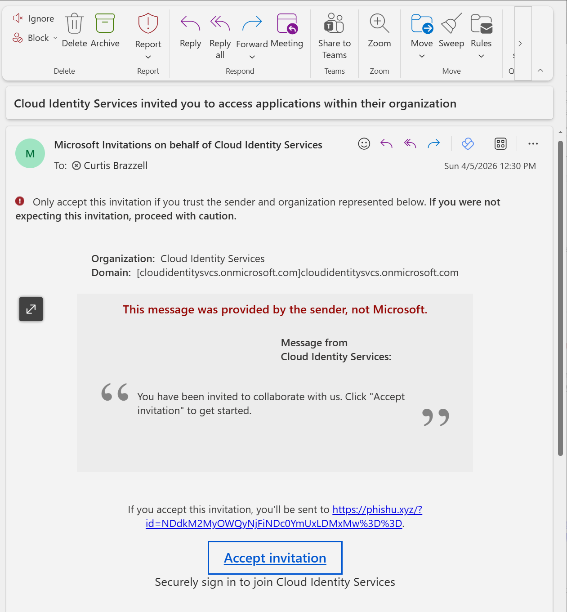
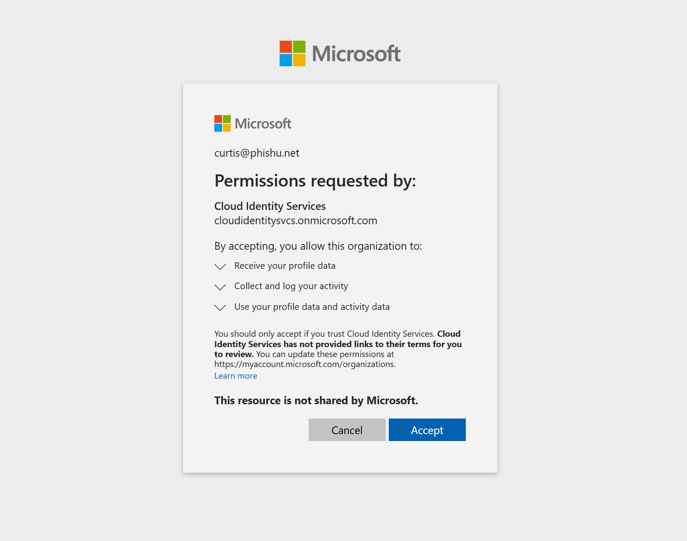

Most phishing delivery methods still force the operator to solve the same set of problems first. Pick or clone a landing page. Build or tune an email template. Stand up a sender. Worry about SPF, DKIM, and DMARC. Think about warm-up, reputation, and evasion. Then hope the target actually sees the message.
Microsoft Entra B2B guest invitation phishing changes that shape completely. The sender is Microsoft. The email comes from invites@microsoft.com. The accept link is a real login.microsoftonline.com URL. There is no operator-controlled sending domain to check, no sender reputation to build, and no email template to nurse through the gateway. That is why this is the attack with no attacker domain.
In the PhishU Framework, that delivery path is no longer a concept piece or a one-off script. It is a shipped technique that an operator can configure in a few clicks. Pick the delivery persona, write the invitation message, choose where the target lands after Microsoft redemption, and pair it with the downstream technique you actually want to test. The hard part is the redirect and what happens after the accept flow. PhishU handles the rest.

No Landing Page to Clone. No Email Template to Build.
That is the first practical difference operators notice. B2B guest invitation delivery is not another SMTP campaign with a Microsoft theme wrapped around it. The delivery email itself is a genuine Microsoft B2B invitation. That removes a surprising amount of operator work.
There is no need to build a lure email from scratch. There is no separate sender mailbox to configure. There is no discussion about whether the right domain has been warmed, whether the mail path is aligned, or whether a target gateway will trust the sender. Microsoft is the sender. The target sees a message that already carries the trust posture users are trained to rely on.
The Framework reflects that reality in the UX. The normal sender-template steps collapse away because they do not apply. Instead of pushing the operator through one more email setup workflow, the platform pivots to what actually matters for this technique: the persona tenant, the invitation text, the post-accept landing page, and the downstream action.

The Real Trick Is the Redirect
The most important engineering detail in this technique is not the email. Microsoft already solved the email. The critical piece is where the target goes after they click Accept and complete Microsoft's redemption flow.
That is where the Framework's redirect handling matters. The invitation flow preserves the campaign tracking identifier across Microsoft's redemption path and sends the target to the configured post-accept landing page. That landing page is where the operator decides what the assessment actually becomes next.
That is also what makes this technique more powerful than a novelty delivery trick. On its own, a Microsoft-sent invitation already tests a serious user-trust and email-security gap. Paired with the right post-accept page, it becomes a realistic social engineering workflow that can continue into OAuth Consent Grant, Device Code, or another downstream path while the target is still moving through a trust context they just accepted from Microsoft.

invites@microsoft.com. There is no attacker-owned sender domain for the target or the gateway to challenge.Why This Feels More Trusted Than Typical Phishing
Traditional user advice usually focuses on sender reputation and domain scrutiny. Check the sender. Hover the link. Be suspicious of a domain that does not match the brand. That advice can still help in a lot of ordinary phishing cases, but it does not help much here.
In this flow, the sender is Microsoft. The accept URL is Microsoft. The sign-in experience is Microsoft. The user moves through a chain that looks legitimate because it is legitimate Microsoft infrastructure until the post-accept transition happens. That is exactly why the technique is valuable for assessment and training. It measures whether users and defenders can spot the real risk when the old simple heuristics do not apply.
For defenders, the lesson is not just that the user clicked. The lesson is that an organization can have mature email filtering and still leave a guest-invitation path effectively ungoverned. This is less about bypassing controls with a clever domain and more about exploiting a trust channel many teams do not meaningfully monitor.
A Few Clicks to Pair Delivery With the Grant Path You Want
One reason this technique matters inside the PhishU Framework instead of as a loose integration is that the operator can move directly from delivery setup to downstream action selection. The B2B path is usually paired with a second technique because the invitation itself is the opener, not the whole play.
If the assessment calls for OAuth Consent Grant, the operator can configure the exact grants they want to request. If the assessment calls for Device Code, the post-accept page can move into that flow instead. If the target scenario calls for a simpler post-accept landing page, the operator can steer there too. The key point is not just that the Framework supports the pieces. It is that the operator can configure them without dropping into separate tools or stitching together redirect logic by hand.
That means the workflow stays short: choose the B2B invitation template, pick the delivery persona, customize the invitation note, set the redirect destination, choose the downstream grant or technique path, and send. No cloned Microsoft landing page. No handmade lure email. No ad hoc evasion strategy just to get the message delivered in the first place.

Why This Is Easier to Run Than It Should Be
From the outside, B2B guest invitation phishing sounds like something that should require a pile of moving parts. In practice, most of those moving parts are either handled by Microsoft or absorbed by the Framework. That is what makes the technique operationally interesting.
The hard operational problems in phishing are often not the ones people talk about on slides. The hard parts are the glue: reliable delivery, believable previews, redirect handling, analytics continuity, and packaging the result into something useful after the target acts. PhishU compresses that glue work into the product workflow. That is why this is more than a screenshot-worthy technique. It is a practical one.
For pentest firms and MSSPs, that matters because time spent building and nursing campaign infrastructure is margin leakage. For internal teams, it matters because every extra moving part makes realistic testing less likely to happen consistently. A few clicks is not just a convenience angle. It is the difference between a technique that gets talked about and a technique that actually gets used in authorized assessments.
The Better Defensive Story
The value of this technique is not that it gives defenders a clever Microsoft-branded lure. The value is that it exposes a delivery channel and trust path many programs still ignore. A target receives a Microsoft-authenticated guest invitation, clicks a Microsoft-owned accept link, signs in through Microsoft's flow, and then reaches the assessment's controlled post-accept step. That is a much more realistic test of trust handling than another fake login page sent from a warmed sender domain.
That is also why the training angle matters. The target does not just need to learn that phishing exists. They need to learn that guest invitations, cross-tenant collaboration prompts, and delegated-access flows can be the real entry point. Most awareness programs do not teach that well because most awareness platforms cannot simulate it cleanly.
Want to test the attack with no attacker domain?
The PhishU Framework supports Microsoft Entra B2B guest invitation delivery, configurable post-accept technique paths, reporting, and training in one workflow. If you want to see how easily this can be run in an authorized assessment, start there.
Contact Us